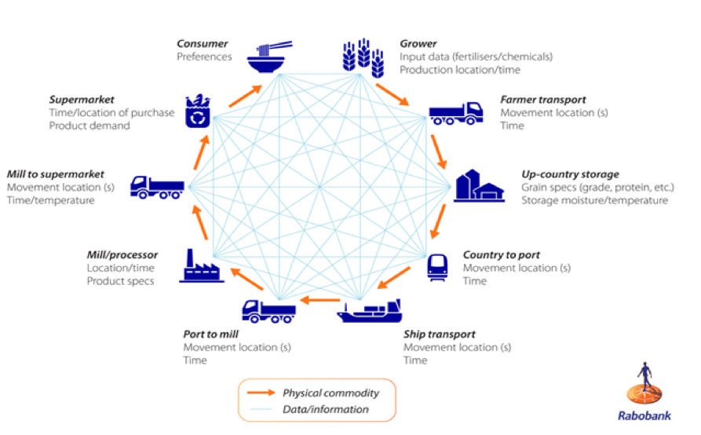

Smart Start
De voorbereiding
De eerste les van de Minor Smart Industry en dus ook van Smart Start. Ik ging er zonder verwachtingen in en wist tevens ook niet goed
wat mij te wachten stond. Als voorbereiding aan zo'n eerste les is dan ook weinig gebeurd op het installeren van alle software na natuurlijk, en het
inlezen in de competenties.
De les
De dag voor deze les stelde alle docenten zich aan de groep voor en werden de thema's van deze Minor en het doel kort aangehaald.
Ook werd de manier van toetsen uitgelegd die ook in deze les weer terug zal komen; de competenties. De eerste les Smart Start had als
doel om de manier van onderzoeken duidelijk te krijgen die aansluit bij het gewenste niveau van de Minor. Dit werd getest door het onderzoeken
van de punten waarop Smart Industry (zie cirkel home pagina) aansluit bij je eigen studie, in mijn geval Technische Bedrijfskunde.
De opdracht
De opdracht bij deze les was als volgt: "Doe nader onderzoek naar de Smart Industry thema's die je hebt besproken."
Deze thema's kwamen voort uit de kruising tussen Technische Bedrijfskunde en de Smart Industry cirkel. In mijn geval
had ik gekozen voor het thema "De gevolgen van automatisering op de werkgelegenheid." Met als doel om meer te weten te
komen over de gevolgen die de innovaties, waarover we deze minor meer te weten zullen komen, te weeg brengen. Onderstaand
de uitwerking van de opdracht:
Klik hier voor de opdracht!
Zelfontwikkelingen
Wat ik heb geleerd en waarop ik mezelf ontwikkeld heb bij het maken van deze opdracht, met het oog op de competenties, is met name een nieuwe manier van
leren die bij mijn eigen opleiding niet gebruikelijk is. Dus het zelf kiezen van een onderwerp waar je meer over wil weten.
Dit is naar mijn gevoel erg positief omdat je je gaat verdiepen in iets waar je interesse naar uitgaat. Ook draagt de opdracht bij aan het
onderzoekend vermogen dit omdat je door het lezen en onderzoeken van onderwerpen een basis aan kennis hebt wat gebruikt kan worden
in de praktijk bij bijvoorbeeld een bedrijf.
De voorbereiding
De tweede les van het vak Smart Start ging in op het helder krijgen van de elementen waaruit een vraagstuk op het gebied van Smart Industry kan bestaan.
De voorbereiding hierbij richtte zich op de kwaliteit van vergaarde bronnen en het opstellen van een research flow.
Deze bestond uit een vijftal stappen: 1. Search for research findings, 2. Which papers are right?, 3. Evaluate papers,
4. Prioritize papers, 5. Prototype. Deze flow vormt een goede basis voor het doen van een onderzoek.
De les
De les richtte zich op het maken van een Smart Story die ging over een idee voor één van de projectorganisaties die zich heeft
aangesloten bij de minor Smart Industry. De les werd opgedeeld in een drietal sprints waarin je met een groepje moest werken aan een idee.
Tussen deze sprints werd er gepresenteerd hoe ver ieder groepje was. De gedachte achter deze les was het leren divergeren en convergeren om
uiteindelijk een sterk idee te hebben staan.

De opdracht
De opdracht die volgde was het verwerken van het in de les bedachte idee in een zodanige vorm dat de opdrachtgever het idee duidelijk heeft.
De twee studenten waarmee ik in het groepje zat besloten er in deze week mee te stoppen waardoor ik het idee zelf heb uitgewerkt. Het ging om
een soort van marktonderzoeksstructuur voor Bluehub. Bluehub is een onderneming die bedrijven helpt bij het groeien van een innovatief idee.
Dit doen zij op de gebieden Agrofood, logistiek & Mobiliteit en Hightech. Het idee is in de vorm van Prezi weergegeven en bestaat uit een opbouw
van maatschappelijk probleem tot oplossing, met als tussenstappen ideeën en criteria om uiteindelijk tot een goede oplossing te komen. Zie onderstaand
document voor de volledige uitwerking:
Klik hier voor de opdracht!

Zelfontwikkeling
Hetgeen wat ik deze les voornamelijk geleerd heb is het werken volgens een bepaalde structuur om tot een idee te komen. Het gestructureerd werken heeft
voor mij een aantal voordelen: het scheiden van bijzaken en hoofdzaken, het hebben van een duidelijk doel en het meenemen van alle belangrijke onderdelen.
Door mezelf dit aan te wennen zal dit vele voordelen opleveren bij het uitvoeren van een onderzoek op het gebied van Smart Industry bij bijvoorbeeld een
stage of het komende project. Dit sluit aan bij de competentie probleemherkenning & diagnose.
De voorbereiding
Les drie van Smart Start ging over de waarde die organisaties creëren voor klanten en de wijze waarop dat gebeurt. Op welke manier kan de waarde van diensten
bepaald worden? Waaraan hecht een klant waarde? Hoe kan Smart Industry hier waarde toevoegen? Deze vraagstukken worden behandeld op basis van het Design Thinking
proces. Het doel hierbij is om te ontdekken waar de waarde voor de klant zit.
De les
Als aansluiting op de voorbereiding ging de les in op deze waarde creërende momenten volgens Value Proposition. De stappen
die hierbij horen zijn de volgende: Emphatise, Define, Ideate, Prototype. Met terugkomend uit de vorige les het divergeren en
convergeren om tot een prototype te komen. Om waarde te creëren is het belangrijk om goed te kunnen observeren, luisteren en testen:
wat wil een klant en op welke manier is dit te bereiken? Ook het in kaart brengen van de Customer Touchpoints is erg belangrijk bij
het ontwikkelen van een product of een dienst. Hierdoor is gemakkelijker duidelijk te krijgen op welke manier waarde te sturen is, dus toe te voegen.
De opdracht
Aan deze les zat geen weekopdracht gekoppeld!
Zelfontwikkeling
Deze week heb ik mezelf voornamelijk ontwikkeld op het gebied van procesmatig en gestructureerd te werk gaan. Deze zelfontwikkeling sluit aan bij
de competentie onderzoekend vermogen.
De voorbereiding
De vierde les van Smart Start ging in op het zo efficiënt en effectief mogelijk inrichten van processen binnen een bedrijf.
Dit thema sluit aan bij de vorige les van Smart Start die ging over het waarde toevoegen aan producten en diensten. Door de processen
Smart in te richten zodat ze de waardepropositie ondersteunen en
De les
De les had als doel om processen te kunnen analyseren via simulatie (Discrete Event Simulation). De programma's waar op werd ingegaan waren:
Google Spreadsheet, RStudio Cloud en BPSimulator. In het eerste programma werd een ziekhuis proces weergegeven door middel van cijfermatige data.
Afwijkingen en wachttijden in het proces kunnen op deze manier gemakkelijk worden weergegeven door er bijvoorbeeld kleuren aan te koppelen. Voor een
student technische bedrijfskunde kunnen programma's als deze goed van pas komen om processen en afwijkingen inzichtelijker te maken en op deze manier
knelpunten te ontdekken.
De opdracht
In de opdracht van deze week heb ik ervoor gekozen om de combinatie van Industry 4.0 met de Lean filosofie te beschrijven op basis van wat ik op de opleiding
Technische Bedrijfskunde en de minor Smart Industry geleerd heb. In deze paper beschrijf ik van beide stromingen de kenmerken met daarbij een aantal praktijkvoorbeelden.
Vervolgens heb ik gekeken naar de combinatie van beide en wat daar de voor- en nadelen van zijn. Er zijn een aantal punten in naar voren gekomen die ik van te voren nog niet wist.
Het grootste voorbeeld is dat beide filosofieën lastig te combineren zijn door een verschil in denken. Zo wordt bij een Lean cultuur relatief weinig geautomatiseerd, terwijl bij
Industry 4.0 automatiseren een van de belangrijkste activiteiten is. Aan de andere kant zijn ze weer heel goed te combineren door het streven naar een zo efficiënt mogelijk proces.
Zie hier de opdracht van deze week:
Relatie Lean/4.0.

Zelfontwikkeling
Deze week heb ik als zeer interessant ervaren en kijk ik terug op een interessant essay over een thema wat ik zelf erg interessant vind.
Door het combineren van een relatief oude en nieuwe filosofie kan je bedrijven helpen naar een overgang naar Industry 4.0. Voor mij sluit dit aan bij de
competentie innoveren. Veel bedrijven zien deze stap namelijk als erg lastig wanneer ze het zien als groot geheel. Door deze te ontleden in kleine stappen
die bedrijven stuk voor stuk kunnen invoeren, wordt het al makkelijker.
De voorbereiding
De vijfde week van het onderdeel Smart Start gaat in op organisaties en haar interne processen, externe omgeving, belangen en het beheersen hiervan.
Het beheersen van de hiervoorgenoemde variabelen kan erg complex zijn en het gebruik van systemen kan hier goed bij helpen. De vraag van deze week is
dan ook: Hoe kan technologie een rol spelen in in het beheersen van complex samenwerkende systemen?
De les
De les van deze week ging in op het onderzoeken van het ecosysteem van organisaties die meedoen aan de projecten. Het maken van een projectplan waarin je onderzoekt
wat de externe omgeving van de organisatie is, is hierbij de opdracht.
De opdracht
De aansluitende opdracht ging over het verder onderzoek doen naar het Platform Business Model op basis van een artikel over platform capitalism. Bij deze opdracht heb ik
ervoor gekozen om eens stuk te schrijven over hoe Big Data een gehele Supply Chain kan veranderen, met als voorbeeld supermarkten. Door de snel veranderende supermarkt wereld
gaan alle supermarkten gebaat bij zo efficiënt mogelijk ingerichte processen. Door de grote hoeveelheid data die er beschikbaar kan zijn binnen supermarkten kunnen verschillende
complexe systemen goed op elkaar aangesloten worden. Deze grote hoeveelheid data (Big Data) kan ervoor zorgen dat supermarkten beter het gedrag van de klanten kunnen begrijpen en
op basis daarvan keuzes kunnen maken zoals: het personaliseren van een winkelervaring. Deze data heeft ook gevolgen op de gehele keten van supermarkten. De vraag kan namelijk beter
worden voorspeld wanneer klantgedrag beter bekend is. Wil je het hele artikel lezen? Klik dan hier!

Zelfontwikkeling
Ook deze week zat weer vol met ontdekkingen waar ik zelf nog niet vanaf wist. Bij de weekopdracht heb ik bewust gekozen voor de supermarkten omdat ik er zelf ook werkzaam ben als
Teamleider. Door te zien welke complexe systemen worden toegepast binnen deze organisaties gaat een wereld open. Door over onderwerpen als Big Data meer te weten, kan ik me beter verplaatsen
in bepaalde systemen die gebruikt worden in een supermarkt en de achterliggende architectuur achter deze systemen. De competentie herkennen / analyseren / diagnosticeren sluit daar voor
mijn gevoel goed bij aan.
De voorbereiding
De laatste week van het thema Smart Start gaat over samenwerken. Het mobiliseren van menselijk kapitaal is hierbij een lastig vraagstuk. Deze week ging het over welke culturen er horen bij
Smart Industry en hoe die bereikt worden? En hoe je de waarde van Smart Human Capital kan meten. Deze vraagstukken zijn belangrijk bij een organisatie die innovatief wil zijn en nieuwe smart
technieken wil introduceren. Personeel is dan een factor die vaak de hakken in het zand zet en het ziet als een gevaar. In de video bijgevoegd bij de voorbereiding wordt door een drietal bedrijven
uitgelegd op welke manier zij hun visie, missie en cultuur vormgeven om de optimale resultaten te kunnen behalen.
De les
In de les werd er verdergegaan op het thema Human Capital. In groepsvorm moest er een format bedacht worden waarmee Smart Human Capital beoordeelt kan worden. In ons geval hebben we dit gedaan door middel
van een zestal onderwerpen: Prestatiebetrokkenheid, Procesbetrokkenheid, Systeemverbetering, Organisatie integratie, Learning Management en Comptetentieontwikkeling. Deze onderwerpen werden onderzocht en
verwerkt in een pictochart om een format te krijgen voor organisaties die willen zien wanneer Human Capital als Smart kan worden gezien.
De opdracht
De opdracht was om deze pictochart met je groepje af te maken en vervolgens op Moodle in te leveren als de opdracht voor deze week. Dit is er bij ons uitgekomen:
klik hier!
Zelfontwikkeling
Persoonlijk heb ik niet zoveel met de HR kant van bedrijven. Het trekt mij minder dan de technologische innovaties binnen bedrijven. Toch is het goed om over dit aspect na te denken, want zonder draagvlak zullen weinig
innovaties het echt goed doen binnen een bedrijf. Door dit te onthouden bij het implementeren en ontwikkelen van nieuwe bedrijfsinnovaties zal de kans van slagen ook groter worden.